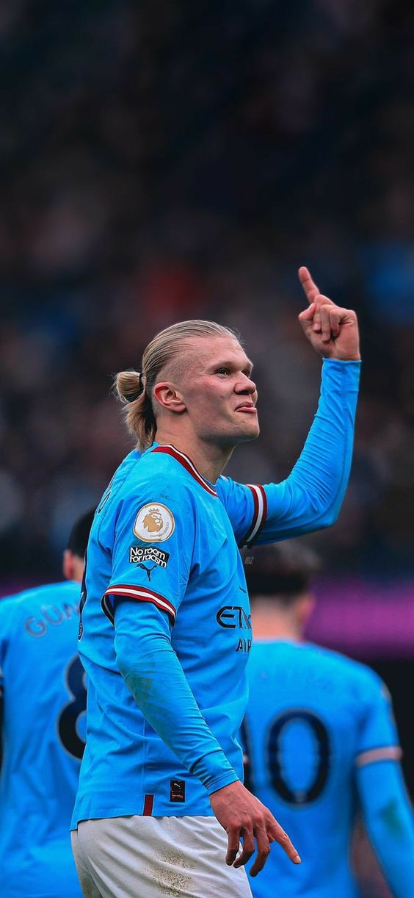
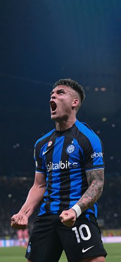
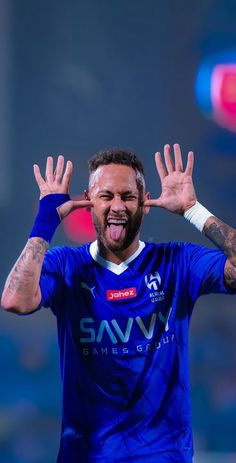
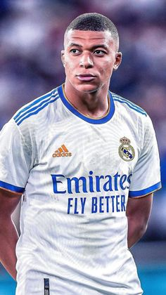
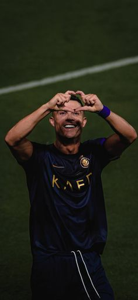
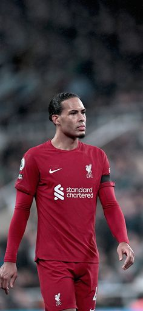
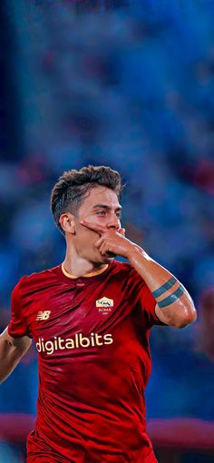
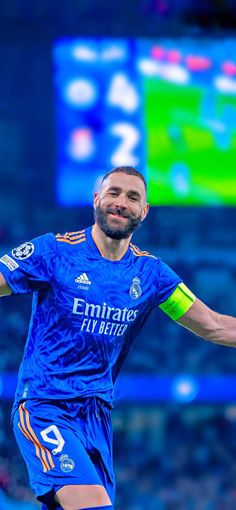
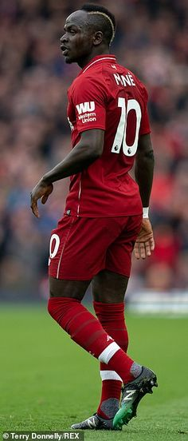

Our Football Players Collection
Explore our selection of top football players. Browse through our gallery to learn more about each player.
Player 1: The Ace Forward

Description:An exceptional forward known for his agility and goal-scoring ability. A key player for any team.
- Position: Forward
- Strengths: Speed, Precision
- Notable Achievements: Top scorer of the season
Player 2: The Defensive Wall

Description:A formidable defender known for his solid tackles and defensive strategies. Essential for maintaining a strong backline.
- Position: Defender
- Skills: Tackling, Blocking
- Honors: Best Defensive Player Award
Player 3: The Midfield Maestro

Description:Known for his exceptional passing and playmaking skills, this midfielder controls the tempo of the game.
- Position: Midfielder
- Strengths: Passing accuracy, Vision
- Achievements: Most Assists in a Season
Player 4: The Goalkeeper Guardian

Description:A top-class goalkeeper with excellent reflexes and shot-stopping abilities. The last line of defense.
- Position: Goalkeeper
- Skills: Reflexes, Shot-stopping
- Awards: Golden Glove Winner
Player 5: The Agile Winger

Description: Famous for his speed and ability to deliver precise crosses. A key player on the flanks.
- Position: Winger
- Strengths: Speed, Crossing
- Achievements: Player of the Month
Player 6: The Dynamic Attacking Midfielder

Description:This attacking midfielder excels in creating goal-scoring opportunities with his creativity and vision.
- Position: Attacking Midfielder
- Skills: Creativity, Vision
- Honors: Best Playmaker Award
Player 7: The Tactical Center Back

Description:A center back known for his strategic positioning and ability to read the game. Strong and reliable.
- Position: Center Back
- Skills: Positioning, Reading the Game
- Awards: Best Defender of the Year
Player 8: The Versatile Forward

Description:A forward with the ability to play in multiple attacking roles. Known for his versatility and goal-scoring prowess.
- Position: Forward
- Strengths: Versatility, Finishing
- Achievements: Most Valuable Player
Player 9: The Creative Playmaker

Description:Renowned for his ability to dictate play and create chances with his exceptional ball control and passing.
- Position: Playmaker
- Skills: Ball Control, Passing
- Honors: Playmaker of the Year
Player 10: The Reliable Defensive Midfielder

Description:This defensive midfielder is known for his ability to break up opposition attacks and protect the defense.
- Position: Defensive Midfielder
- Skills: Tackling, Interceptions
- Awards: Best Defensive Midfielder
Contact Us
If you have any questions about our football players, please feel free to
email us.